Probe
The Probe option helps to display CAE result values for specific nodes or elements as labels in the VCollab Presenter viewer.
There are several kinds of Probes to choose from:
Current Result - Derived:Displays value of current derived result at probed ID. Shortcut:enable Probe and click on the model.
Current Result - Full:Displays base components of selected result. Shortcut:enable Probe and hit Alt + click on the model.
X,Y,Z components for vector result.
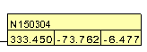
Translational and Rotational x,y,z for six degrees of freedom result.
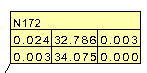
xx, yy, zz, xy, yz, xz components for tensor results in a matrix form.
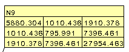
All Results - Table :Displays all result values of the probed ID.
All Instances - Table : Displays all instance values of current result for the probed ID. Shortcut - enable Probe and hit Ctrl + left click.
All Instances - XYPlot:Displays XYPlot curve which describes instances vs CAE result values. Shortcut - enable Probe and hit Shift + left click.
Tracer: Displays path of a node traced in transient animation.
Steps to Select a probe type
- Right click inside the viewer window to open the context menu
- Select CAE | Probe Type
- Click any one of them.
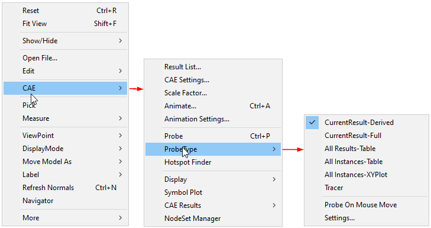
Probe On Mouse Move - This option enables probing CAE result by moving the mouse over the model.
Probe types can also be selected from the Probe icon drop down menu
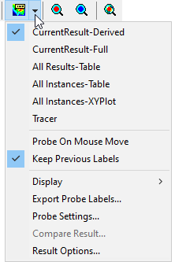
Steps to probe CAE results
- Click
 icon or select CAE | Probe option in context
menu, which enables mouse mode to probe CAE Result.
icon or select CAE | Probe option in context
menu, which enables mouse mode to probe CAE Result. - Move mouse over nodal points. A label with CAE result value for the nodal point appears and disappears as the mouse moves to another nodal point.
- Click a nodal point. The nodal CAE result value will be displayed.
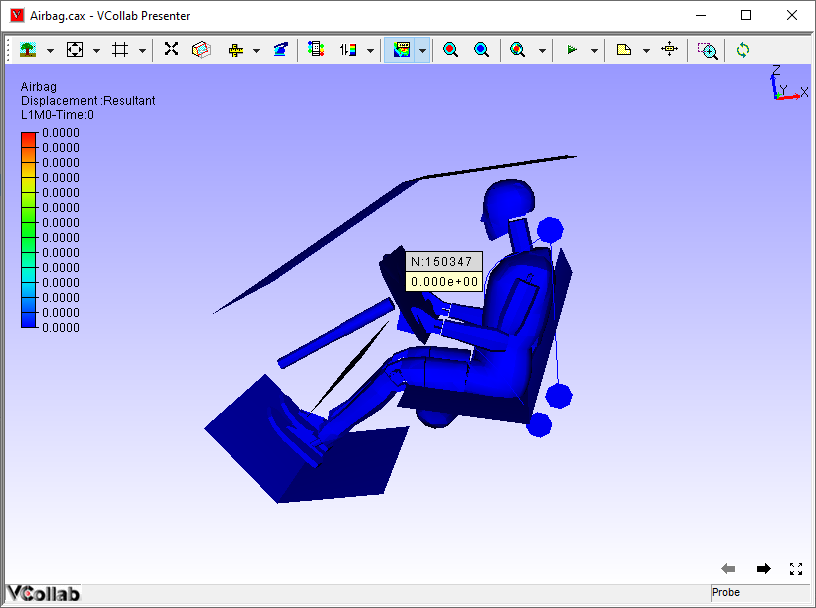
- Select probe type as Current Result - Full or use the shortcut key Alt + click on model probes to display the base components of result.
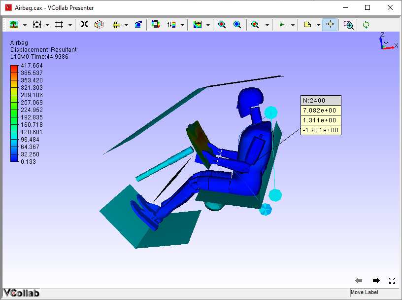
- Select probe type as All Results - Table and click on a node. It displays a table with abbreviated result names and values.
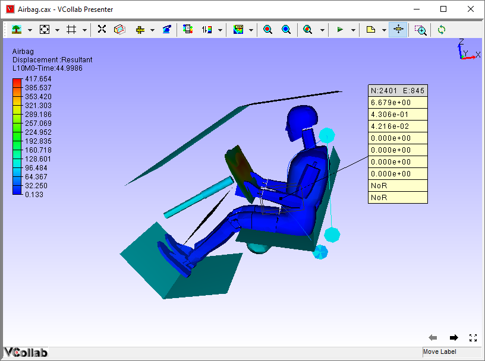
- Select probe type as All Instances - Table or shortcut key Shift + Click on a nodal point to display all available nodal results for the same node in a single label.
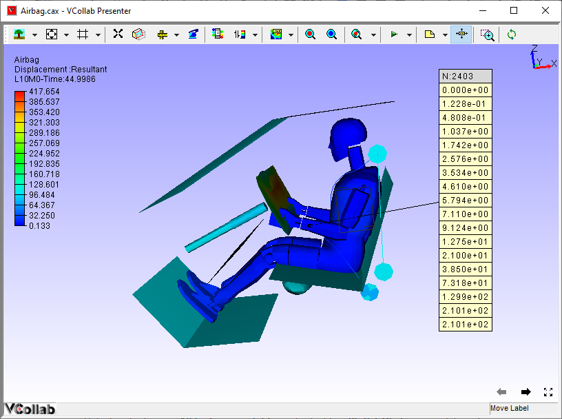
- Select probe type as All Instances - XYPlot or shortcut key Ctrl + Click on a nodal ID to display XY plot transient curve. This is applicable only for transient data.
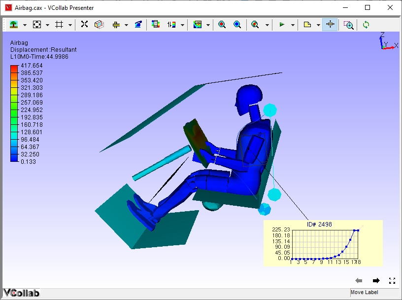
- Select probe type as tracer to trace the path of the node at different instances or time steps.
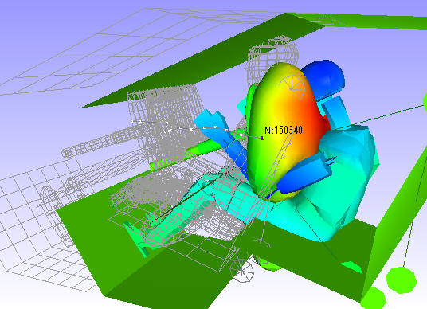
Probe Table Details
The probe table details are split into three regions.
- Header : This corresponds to the table header. It contains node or element ID. In case of merging more than one model, this header contains more than one ID and each ID refers to one column in the value region.
- Row Header: The row header holds the model name for the column data. It is useful when comparing multiple models.
- Column Header: The column header lists all the result names. It contains only abbreviations of results. For e.g., D is for displacement. Users can refer to the abbreviation table if necessary.
- Value Region: These cells hold the values corresponding to column and row header.
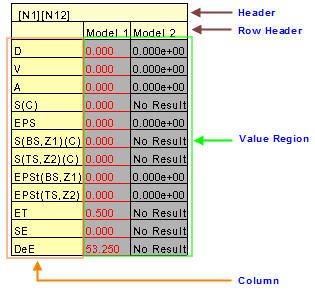
Table Header Context Menu
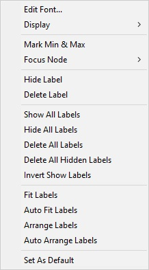
Column or Row header Context Menu
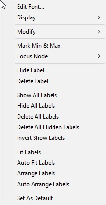
Value Region Context Menu
The various options available under the Probe label context menu are explained below.
| Edit Font | Change the font and its attributes. |
| Display | Show/hide the selected label headers and label legends. |
| Modify | Modify or edit the table except existing result values. It is visible for Model header, Result header and Value cells. It is not applicable for ID header and Part header cells. |
| Mark Min & Max | Highlight the table if value is maximum or minimum among the available tables. |
| Focus Node | Focus the nodal vertex region based on levels. |
| Hide Label | Hide the selected label. |
| Delete Label | Delete the selected label. |
| Show All Labels | Shows all labels independent of attached position visibility |
| Hide All Labels | Hide all labels. |
| Delete All Labels | Delete all existing labels. |
| Delete All Hidden Labels | Delete all hidden labels. |
| Invert Show Labels | Invert the labels’ visibility. |
| Fit Labels | Fit all labels inside the viewer. |
| Autofit Labels | Fit all labels inside the viewer during scene rotation, zoom and pan. |
| Arrange Labels | Arrange all labels and tables in multiple rows according to their attached positions in the model. |
| Auto Arrange Labels | Arrange all labels automatically whenever the user modifies the label or table dimensions |
| Set As Default | Sets the probe table format settings and probe type as default In case of viewpoint, these settings will be overridden by viewpoint label settings. (i.e., viewpoint label format will be set as default) |
Display Submenu
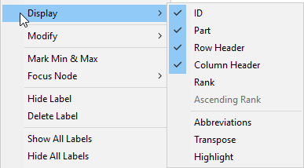
The various options available under the Display submenu are explained below.
| ID | Show or hide table header. |
| Part | Show or hide part name header |
| Row Header | Show or hide row header. |
| Column Header | Show or hide column header. |
| Rank | Show or hide Rank cell. |
| Ascending Rank | Rank will be displayed in ascending or descending order. |
| Abbreviations | Show or hide result abbreviations table. |
| Transpose | Transpose the table matrix. |
| Highlight | Highlight the picked label. |
Modify Submenu
The Modify submenu is different depending on the type of the label cell double clicked. If the clicked cell is a value cell, then Field Value… and Precision… appear. Header Name… appears for model and result header cells.
Value Cell Model/Result Header Cell
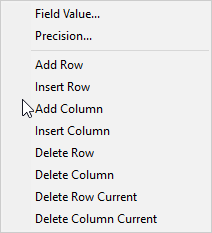 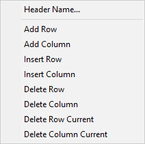
The various options available under the modify sub menu are explained below.
| Field Value | Edit values and update it to multiple cells across all viewpoints. |
| Precision | Change precision and formats. |
| Add Row | Add a new row at the end. |
| Insert Row | Insert a new row at the mouse cursor position. |
| Add Column | Add a new column at the end. |
| Insert Column | Insert a new column at the mouse cursor position. |
| Delete Row | Delete the specified row. |
| Delete Column | Delete the specified column. |
| Header Name | Edit the header display name. |
| Delete Row Current | Delete current cell row (based on the cursor position). |
| Delete Column Current | Delete the current column. |
Focus Node Submenu
Double click on a label cell to open the context menu. Click on focus node option
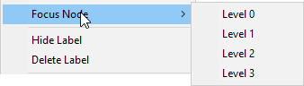
Focus Node helps to zoom in the nodal vertex region in four levels for better visualization:
- Level 0 focuses the element associated with the nodal vertex.
- Level 1 focuses on the nodal vertex with 1/10th of part bounding radius.
- Level 2 focuses on the nodal vertex with 1/4th of part bounding radius.
- Level 3 focuses on the nodal vertex with part bounding radius.
Steps to scale Geometry or Parts before Probing
- Click Edit | Product Explorer, which displays the product tree.
- Click the group node, not leaf node.
- Right click on the node to open the context menu.
- Select Transform option.
- Check the Scale option.
- Enter the scale factors for each coordinate axis. The model is scaled and is ready for probing.
Steps to Edit and format Table
- Double click on the table header cells to open the context menu
- Click Modify | Header Name to change the header or result name.
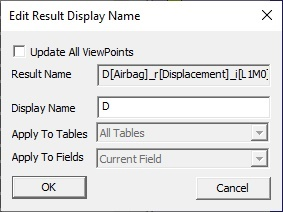
- Check Update Viewpoints option to update all viewpoint tables.
- Enter a name and click OK to update the table.
- Right click on a value cell and select Edit Font to open the Edit Value Label panel.
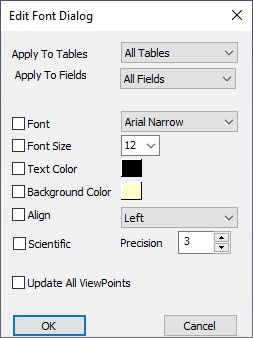
| Apply to Tables | Set either current table or all tables |
| Apply to Fields | Set all fields or current field or current column. |
| Font | Change the font |
| Font Size | Change the font size. |
| Text Color | Change text color |
| Background Color | Enable/disable background and select a color. |
| Align | Align the label text into left, right or center horizontally. |
| Update All ViewPoints | Apply and update the modifications to viewpoints too. |
| Update Merged Models | Update all merged model probe labels |
- Make necessary changes and click OK.
- Double Click on the value cell to open the context menu and edit the value.
- Click ‘Modify | Field Value…’ option which opens the Edit Table Value panel.
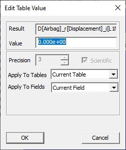
- Edit the value and update the modified value to all update viewpoints if needed
- Select All Tables and All Fields options to apply the modifications to all viewpoints.
- The modified value can be applied to all fields or the column selected or current cell or field.
- Click OK to apply all modifications.
Steps to edit Header Legend and Abbreviation Legend
Header Legend
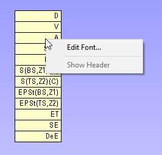
- Right click on the header table and select Edit Font to open up Edit Font Dialog
- Show Header enables and displays model names as header in case of merged models.
Abbreviation Legend
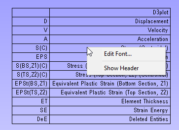
- Right click on the header table and select Edit Font to open up Edit Font Dialog
- Show Header toggles the table legend header visibility.